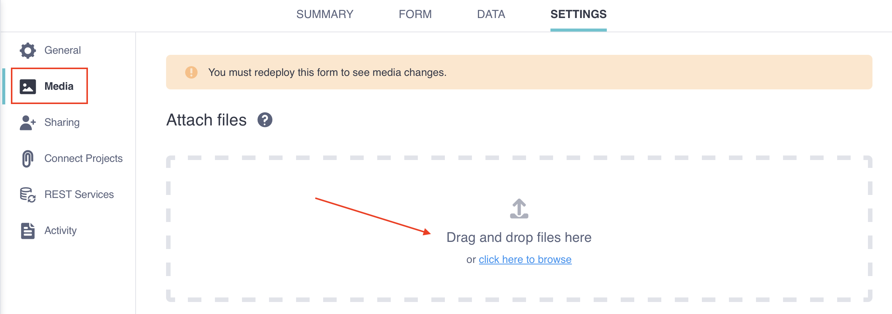

Parcourez la base de connaissances, explorez nos ressources et visitez notre Forum communautaire pour des informations plus détaillées
Dernière mise à jour : 6 mai 2026
La fonction pulldata() dans XLSForm vous permet de récupérer dynamiquement des informations depuis un fichier CSV externe lors de la saisie d’un formulaire. Cela vous permet de référencer des bases de données existantes et d’importer automatiquement des informations associées, évitant ainsi aux enquêteurs de ressaisir les mêmes données.
Par exemple, vous pouvez utiliser pulldata() pour :
Remplir automatiquement des informations associées : Lorsqu’un identifiant, un code ou une clé est saisi, récupérer automatiquement les détails associés tels qu’un nom, une catégorie ou une description.
Précharger des données de référence : Charger des informations depuis des fichiers externes afin que les enquêteurs n’aient à collecter que les données nouvelles ou mises à jour.
Note : La fonction pulldata() utilise des fichiers CSV externes comme source de données. Si vous souhaitez référencer des données provenant d'un autre projet KoboToolbox plutôt que d'un fichier CSV, vous pouvez utiliser la liaison dynamique de projets.
L’utilisation de pulldata() contribue à réduire les erreurs, à gagner du temps lors de la collecte de données et à garantir la cohérence des formulaires avec les bases de données de référence externes. Cette fonction est disponible avec l’application Android KoboCollect et les formulaires web. Nous recommandons d’utiliser XLSForm pour configurer la fonction pulldata().
Cet article couvre les étapes suivantes pour extraire des données d’un fichier CSV externe :
Configurer votre fichier CSV externe
Configurer votre XLSForm
Importer votre fichier CSV externe dans KoboToolbox
Pour utiliser pulldata(), commencez par préparer un fichier CSV externe contenant les données de référence que vous souhaitez récupérer. Chaque ligne doit représenter un enregistrement unique (par exemple, un participant, un lieu ou un élément) et le fichier doit comporter au moins deux colonnes. L’une d’elles doit contenir la variable d’index qui correspond aux valeurs saisies dans votre formulaire.
La variable d’index joue le rôle de clé primaire qui relie votre XLSForm au fichier CSV externe. Il doit s’agir d’un identifiant unique présent dans les deux fichiers, tel qu’un identifiant de participant, un nom de district ou tout autre code correspondant.
Les colonnes restantes peuvent contenir tous les détails supplémentaires que vous souhaitez récupérer, tels que des noms, des catégories ou des descriptions. Assurez-vous que le fichier CSV est propre, formaté de manière cohérente et enregistré avec l’extension .csv.
Exemple : eligibility.csv
ID |
status |
age |
|---|---|---|
AH784N |
eligible |
19 |
DB839K |
ineligible |
37 |
SH849T |
eligible |
42 |
Note : Pour utiliser pulldata() avec des questions select_one ou select_multiple, la valeur dans le fichier externe doit correspondre au nom du choix, et non au libellé du choix. Pour les questions select_multiple, listez plusieurs noms de choix séparés par un espace.
Une fois votre fichier CSV externe configuré, paramétrez votre XLSForm de la manière suivante :
Assurez-vous que votre XLSForm contient une question servant de variable d’index.
Ajoutez une nouvelle question à votre formulaire pour récupérer des données depuis le fichier externe, en utilisant l’une des deux approches suivantes :
Ajoutez une question calculate pour récupérer et stocker des valeurs en vue d’une utilisation ultérieure dans le formulaire ou la base de données. Par exemple, vous pouvez l’utiliser pour afficher une valeur dans une note ou le libellé d’une question, ou pour utiliser la valeur dans des calculs et une logique de saut.
Ajoutez une question text, integer, decimal, date, select_one ou select_multiple pour inclure les valeurs récupérées comme réponses par défaut dans des champs modifiables.
Dans la colonne calculation de votre nouvelle question, utilisez la fonction pulldata() pour indiquer quel champ du fichier CSV récupérer. Utilisez la syntaxe suivante : pulldata('csv','pull_from', 'csv_index', ${survey_index}).
csv est le nom du fichier CSV, sans l’extension.
pull_from désigne la colonne de votre fichier CSV contenant les données que vous souhaitez importer dans votre formulaire.
csv_index est la colonne de votre fichier CSV contenant la variable d’index.
survey_index est le nom de la question de votre formulaire contenant la variable d’index.
onglet survey
type |
name |
label |
calculation |
|---|---|---|---|
text |
respondent_id |
Respondent ID |
|
calculate |
eligibility_status |
pulldata(“eligibility”, “status”, “ID”, ${respondent_id}) |
|
note |
eligibility_note |
Respondent is ${eligibility_status} for the study. |
|
integer |
respondent_age |
Respondent age |
pulldata(“eligibility”, “age”, “ID”, ${respondent_id}) |
survey |
Dans l’exemple ci-dessus, le calcul récupère la valeur de la colonne status du fichier eligibility.csv, dans la ligne où l”ID du fichier CSV correspond à l’identifiant saisi dans la question respondent_id de votre formulaire. Ensuite, il récupère et affiche l’âge du répondant depuis la colonne age du fichier eligibility.csv.
Note : Après avoir utilisé la fonction pulldata() pour récupérer des données d'un fichier CSV externe, vous pouvez référencer ce champ dans des conditions de logique de saut, des contraintes et des libellés ultérieurs, comme n'importe quel autre champ ou calcul.
La dernière étape pour lier votre fichier CSV externe à votre formulaire consiste à importer le fichier dans KoboToolbox. Pour ce faire :
Accédez aux PARAMÈTRES de votre projet et ouvrez l’onglet Média.
Importez le ou les fichiers CSV en utilisant exactement le nom que vous avez indiqué dans votre XLSForm.
Déployez ou redéployez le formulaire.

Pour en savoir plus sur l'importation de fichiers multimédias, consultez l'article Importer des fichiers multimédias dans un projet.
int() ou number() à la valeur récupérée dans votre XLSForm.
' devant la date pour éviter la mise en forme automatique des dates par Excel.
Avez-vous trouvé ce que vous cherchiez ? La traduction était-elle claire ? Manquait-il quelque chose ?
Partagez vos commentaires pour nous aider à améliorer cet article !
KoboToolbox est maintenu par Kobo Inc.